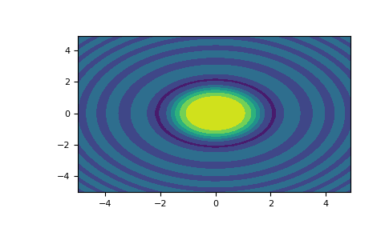

numpy.meshgrid¶
-
numpy.meshgrid(*xi, copy=True, sparse=False, indexing='xy')[source]¶ Return coordinate matrices from coordinate vectors.
Make N-D coordinate arrays for vectorized evaluations of N-D scalar/vector fields over N-D grids, given one-dimensional coordinate arrays x1, x2,…, xn.
Changed in version 1.9: 1-D and 0-D cases are allowed.
- Parameters
- x1, x2,…, xnarray_like
1-D arrays representing the coordinates of a grid.
- indexing{‘xy’, ‘ij’}, optional
Cartesian (‘xy’, default) or matrix (‘ij’) indexing of output. See Notes for more details.
New in version 1.7.0.
- sparsebool, optional
If True a sparse grid is returned in order to conserve memory. Default is False.
New in version 1.7.0.
- copybool, optional
If False, a view into the original arrays are returned in order to conserve memory. Default is True. Please note that
sparse=False, copy=Falsewill likely return non-contiguous arrays. Furthermore, more than one element of a broadcast array may refer to a single memory location. If you need to write to the arrays, make copies first.New in version 1.7.0.
- Returns
- X1, X2,…, XNndarray
For vectors x1, x2,…, ‘xn’ with lengths
Ni=len(xi), return(N1, N2, N3,...Nn)shaped arrays if indexing=’ij’ or(N2, N1, N3,...Nn)shaped arrays if indexing=’xy’ with the elements of xi repeated to fill the matrix along the first dimension for x1, the second for x2 and so on.
See also
index_tricks.mgridConstruct a multi-dimensional “meshgrid” using indexing notation.
index_tricks.ogridConstruct an open multi-dimensional “meshgrid” using indexing notation.
Notes
This function supports both indexing conventions through the indexing keyword argument. Giving the string ‘ij’ returns a meshgrid with matrix indexing, while ‘xy’ returns a meshgrid with Cartesian indexing. In the 2-D case with inputs of length M and N, the outputs are of shape (N, M) for ‘xy’ indexing and (M, N) for ‘ij’ indexing. In the 3-D case with inputs of length M, N and P, outputs are of shape (N, M, P) for ‘xy’ indexing and (M, N, P) for ‘ij’ indexing. The difference is illustrated by the following code snippet:
xv, yv = np.meshgrid(x, y, sparse=False, indexing='ij') for i in range(nx): for j in range(ny): # treat xv[i,j], yv[i,j] xv, yv = np.meshgrid(x, y, sparse=False, indexing='xy') for i in range(nx): for j in range(ny): # treat xv[j,i], yv[j,i]
In the 1-D and 0-D case, the indexing and sparse keywords have no effect.
Examples
>>> nx, ny = (3, 2) >>> x = np.linspace(0, 1, nx) >>> y = np.linspace(0, 1, ny) >>> xv, yv = np.meshgrid(x, y) >>> xv array([[0. , 0.5, 1. ], [0. , 0.5, 1. ]]) >>> yv array([[0., 0., 0.], [1., 1., 1.]]) >>> xv, yv = np.meshgrid(x, y, sparse=True) # make sparse output arrays >>> xv array([[0. , 0.5, 1. ]]) >>> yv array([[0.], [1.]])
meshgridis very useful to evaluate functions on a grid.>>> import matplotlib.pyplot as plt >>> x = np.arange(-5, 5, 0.1) >>> y = np.arange(-5, 5, 0.1) >>> xx, yy = np.meshgrid(x, y, sparse=True) >>> z = np.sin(xx**2 + yy**2) / (xx**2 + yy**2) >>> h = plt.contourf(x,y,z) >>> plt.show()
